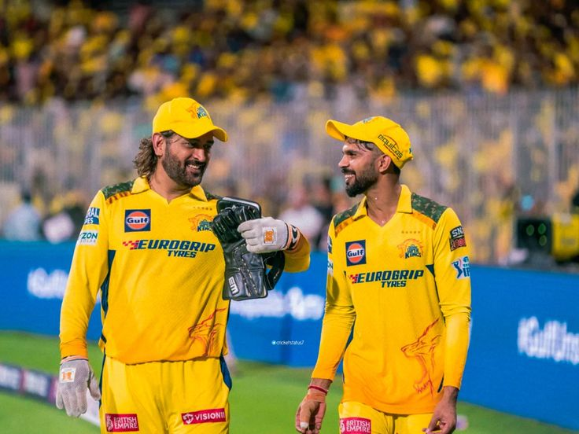
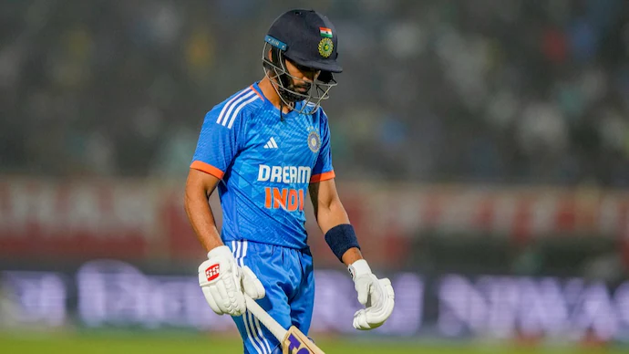

The Weight of Being "Next"
There is no heavier word in Indian cricket than "next." Next Sachin. Next Dravid. Next Dhoni. The moment someone sticks that label on you, your career stops being about what you actually do and starts being about what you're supposed to become. And what you're supposed to become is usually impossible, because the person you're being compared to spent fifteen years building a legend that nobody can replicate in two seasons.
Ruturaj Gaikwad knows this better than anyone in Indian cricket right now. He didn't ask to be called the next Dhoni. He didn't campaign for it, didn't put it on his Instagram bio, didn't give interviews comparing himself to the most successful captain in IPL history. But the label came anyway, because that's how Indian cricket works. You join CSK, you bat beautifully, you win the Orange Cap, and suddenly the entire country decides you're going to carry forward a legacy that took MS Dhoni two decades to build.
And when things went wrong, which they did, spectacularly, in IPL 2026, that same label turned from a compliment into a weapon.
The Kid Who Made CSK Believe

To understand how badly things fell apart, you need to understand how high they were before the fall.
Ruturaj Gaikwad didn't arrive in the IPL with noise. He arrived quietly, a technically gifted opener from Pune who caught CSK's eye and got his shot in 2020. By 2021, he wasn't just in the team. He was the reason the team was winning.
635 runs. Orange Cap. IPL champion. All in one season. He was 24 years old.
The way he batted was different from what CSK fans were used to. Where Dhoni was explosive and unpredictable, Gaikwad was elegant and controlled. Textbook cover drives, perfectly timed flicks, the kind of batting that made coaches smile and purists fall in love. He wasn't trying to be Virat Kohli. He wasn't trying to be Dhoni. He was just being himself, and that version of himself was genuinely brilliant.
2023 was more of the same. 2024, even better. By the time CSK formally handed him the captaincy, it felt like the most natural transition in IPL history. Dhoni had groomed him. The franchise believed in him. The fans were ready.
What nobody was ready for was what came next.
When the Crown Got Heavy
IPL 2026 was supposed to be the start of the "Ruturaj era" at CSK. The season where the franchise proved it could thrive without Dhoni on the field. The season where Gaikwad stepped out of the shadow and into the spotlight as his own man.
Instead, it was a disaster.
337 runs in 14 matches. A strike rate of 122. CSK finished 8th. Not 4th, not 5th, not in a tough-luck semifinal exit. Eighth. Bottom half of the table. The kind of season that CSK, under Dhoni, would have considered unthinkable.

The numbers were bad. But the way he got those numbers was worse. Gaikwad's batting, once fluid and fearless, became cautious and constrained. His powerplay scoring dropped significantly. His strike rate, which had been climbing every season, suddenly fell off a cliff. It was like watching a completely different player.
And everyone had a theory about why.
What Ashwin Said and Why It Stung
Ravichandran Ashwin isn't the type to sugarcoat things. When he spoke publicly about Gaikwad's struggles, his words carried weight because they came from someone who understands the pressure of performing for India, who knows what captaincy does to your head, and who has never been afraid to say what he thinks even when it's uncomfortable.
Ashwin's observation was pointed: the burden of captaincy was killing Gaikwad's natural game. That the Ruturaj who used to walk out and play freely, trusting his instincts, was now walking out with a tactical playbook in his head and twenty things to worry about before his bat even touched the ball.
"When you're captain, you're not just batting for yourself. You're batting for the team's plan. And sometimes that plan and your natural game don't get along."Cricket analyst on captaincy's impact on Gaikwad
It's a problem that's destroyed better players than Gaikwad. History is full of cricketers whose batting collapsed under the weight of leadership. Steve Smith struggled when he first captained Australia. Even Kohli's form dipped during his most intense years as India captain. The mental bandwidth that captaincy demands is real, and it takes from the same tank that your batting technique draws from.
But what made Gaikwad's situation uniquely painful was who he was being compared to. Dhoni had this almost supernatural ability to separate captaincy from batting. He could orchestrate the entire game, manage bowlers, set fields, and then walk in at number 5 and smash 30 off 15 balls like he'd been sitting in a spa for the last three hours. That's not normal. That's a one-in-a-generation gift. And expecting Gaikwad to replicate it was always unfair, even if nobody wanted to admit it.
Ruturaj Gaikwad captained India to a Gold Medal at the 2022 Asian Games cricket tournament and scored a maiden ODI century by mid-2026. His struggles were IPL-specific, not a broader career decline.
The Century Nobody Saw Coming
This is where the story takes a turn that matters.
After IPL 2026 ended, after the 8th-place finish, after the criticism and the memes and the "he's not Dhoni" takes that flooded every cricket forum on the internet, Gaikwad did what the best cricketers always do when the world writes them off.
He went and scored runs.
Playing for India A against Sri Lanka A in the Tri-Nation series in Dambulla, Gaikwad smashed 101 runs. A proper century. The kind of innings that doesn't just prove your form is back. It proves your mentality is intact. That the IPL didn't break you. That the noise didn't get inside your head permanently.
Nobody was expecting it. After the season he'd had, most analysts had mentally filed Gaikwad away as a player going through a rough patch that might take months to recover from. Instead, it took him about two weeks.
That's not luck. That's not a flat pitch. That's a player who went home after the worst professional experience of his life, looked at himself honestly, and decided to come back swinging. And if you don't respect that, you don't understand what sport actually demands from the people who play it.
Ruturaj Is Not the Next Dhoni. He Shouldn't Have to Be
Here's the truth that CSK fans, cricket media, and the entire "next Dhoni" industry needs to hear: there is no next Dhoni. There was never going to be. Dhoni was a freak of nature, a cricketing anomaly who combined ice-cold captaincy with explosive batting with the most clutch temperament the sport has ever seen. Expecting any human being to walk into that role and immediately replicate it is not a standard. It's a trap.
What Ruturaj Gaikwad actually is, if you strip away the comparisons and the pressure and the "8th place" discourse, is a phenomenally talented cricketer who's 27 years old, who has an Orange Cap and an Asian Games gold medal and an ODI century on his resume, and who just went through the hardest season of his career and responded with a century within weeks.
That's not a failure story. That's a resilience story. The kind that looks completely different in two years when Gaikwad has figured out how to balance captaincy with batting, when CSK has rebuilt around his vision instead of Dhoni's ghost, and when all the people who called him a fraud in April are pretending they believed in him all along.
The transition from one era to another is always ugly. It was ugly when Sourav Ganguly took over from Sachin Tendulkar's shadow. It was ugly when Kohli inherited the team from Dhoni at the international level. Every great leader in cricket history had a period where things fell apart before they came together. What matters is what you do in that gap between the falling and the rising.
Ruturaj Gaikwad just told the world what he does. He scores hundreds. And if IPL 2026 was the chapter where everything went wrong, there are plenty of chapters left for things to go right.
📷 Image Credits: Images via BCCI/IPL/CSK
Frequently Asked Questions
Why did CSK finish 8th in IPL 2026?
CSK finished 8th in IPL 2026 during what captain Ruturaj Gaikwad described as a "transition phase." The team struggled with the post-Dhoni era, inconsistent batting, and tactical challenges as they rebuilt their squad identity.
How many runs did Ruturaj Gaikwad score in IPL 2026?
Ruturaj Gaikwad scored 337 runs in 14 matches during IPL 2026 at a strike rate of 122.33, which was his worst full IPL season. Critics noted that the burden of captaincy appeared to impact his natural aggressive game.
Is Ruturaj Gaikwad the next MS Dhoni?
Ruturaj Gaikwad was widely seen as Dhoni's successor at CSK and was groomed for the captaincy role. However, experts and fans have noted that the comparison put immense pressure on him, and his leadership style is naturally different from Dhoni's.
Did Ruturaj Gaikwad win the Orange Cap?
Yes, Ruturaj Gaikwad won the Orange Cap in IPL 2021 with 635 runs, playing a key role in CSK's title-winning campaign that year. He was one of the breakout stars of that season.
How did Ruturaj Gaikwad respond after IPL 2026?
After his difficult IPL 2026 season, Ruturaj Gaikwad scored a century (101 runs) for India A against Sri Lanka A in June 2026, showing resilience and signaling his intent to bounce back strongly.